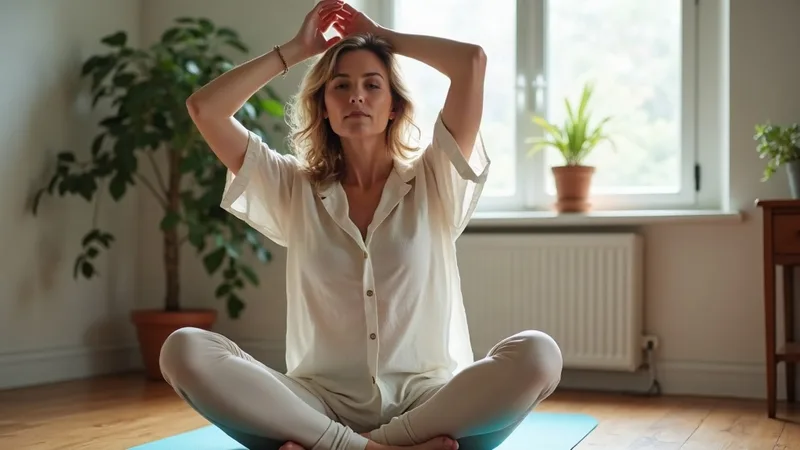
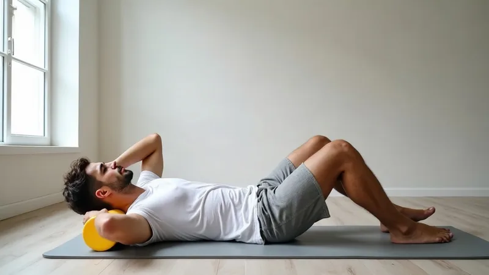
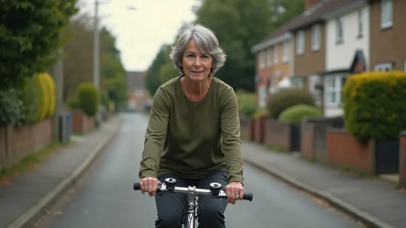

Why active recovery matters more than rest days is a question worth taking seriously, especially if you have ever felt stiff, sluggish, or flat after a full day of doing nothing.
Most people assume that the body repairs itself best when it is completely still. That idea is not entirely wrong, but it misses something important about how circulation, stiffness, and low level stress interact during recovery.
This article walks through five practical checks to help you decide whether gentle movement on your off days might serve you better than the couch.
Why active recovery matters more than rest days comes down to how the body responds to gentle movement versus total stillness. Light activity on off days can support circulation, reduce stiffness, and help you feel more ready for your next session. This guide gives you five checks to decide what works for your situation.
What Is Active Recovery and How Does It Differ from a Rest Day?
Check 1: Ask yourself whether your planned rest day will leave you feeling better or just less tired. If you typically feel stiff and heavy after a full rest day, that is a signal worth acting on before defaulting to the couch again.
Active recovery means doing low intensity movement on a day when you are not training hard. Think a slow walk, light stretching, or easy cycling at a conversational pace. It is deliberate but gentle, not a workout in disguise.
A full rest day means minimal physical activity. Both approaches have a place. The question is which one fits what your body actually needs right now, and that answer can change week to week depending on training load and sleep.
Key difference to hold on to: active recovery is not about pushing through fatigue. It is about keeping things moving gently so your body does not stiffen up or stall between harder sessions.
- Active recovery examples: a 20 to 30 minute walk, gentle yoga, easy swimming, foam rolling
- Full rest day examples: sitting, light reading, screen time, napping
- Neither is wrong; the wrong choice is picking one without checking in with yourself first
Many people default to full rest because it feels like the responsible choice after hard effort. Sometimes it is. But if you have ever returned to training after a complete rest day feeling tight, heavy, or unmotivated, that pattern is worth examining.
Active recovery asks very little of your body while still keeping blood moving to muscles that need it. That gentle circulation can support how you feel within hours, not just the following morning.
To decide which approach suits a given day, run through a brief checklist. How sore are you? Is the soreness dull and muscular or sharp and near a joint? Did you sleep well last night? Are you under unusual stress? Your answers to those four questions alone will usually point clearly toward movement or stillness.
If dull muscular ache and mild restlessness describe your day, gentle movement is likely the better call. If you slept poorly, feel unwell, or have sharp discomfort anywhere, full rest or medical advice takes priority.
Consider speaking with a qualified clinician or physiotherapist if you are unsure how much activity is appropriate after illness, injury, or a period of very high physical output.

What Are the Signs You Need Active Recovery Rather Than Full Rest?
Your body often signals what kind of recovery it needs. Learning to read those signals takes practice, but a few patterns show up consistently across different fitness levels and training backgrounds.
Muscle soreness that feels like tightness or achiness, rather than sharp pain, is one of the clearest signs that gentle movement may help more than stillness. Movement encourages blood flow to those areas, which can reduce that heavy, stiff feeling over the course of the day.
Low energy with restless legs, mild irritability after sitting all day, or difficulty sleeping on a full rest day can also point toward needing some gentle movement rather than more stillness. These signals are often subtle but consistent.
- Signs you may benefit from active recovery: dull muscle ache, general heaviness, restlessness, low mood after a sedentary day
- Signs you may need full rest: sharp or joint pain, illness, fever, genuine exhaustion that sleep has not touched, or advice from a healthcare provider
Important: sharp joint pain, chest discomfort, or pain that worsens with movement are reasons to stop and speak with a qualified clinician, not reasons to try active recovery. Do not attempt to move through those signals.
Mood and mental energy are also worth checking. Some people find that a short walk on an off day lifts their mood noticeably. Others genuinely need the stillness. Neither response is wrong; they reflect different nervous system states and recovery needs.
The NHS notes that physical activity can support mental wellbeing, though individual responses vary. If you feel worse after gentle movement rather than better, that is information worth taking seriously rather than overriding.
A simple decision rule: if your soreness is muscular, your sleep was reasonable, and you feel vaguely restless, try 20 minutes of easy walking. If you feel genuinely depleted, choose rest without guilt. Both choices are valid recovery strategies when made deliberately.
Tracking how you feel after each type of recovery day over two or three weeks can give you a clearer picture than any generic rule or online guide, including this one.
Why Does Active Recovery Happen to Work Better for Many People?
The short answer is blood flow. Gentle movement keeps circulation moving to muscles that are repairing themselves, and that process does not require intensity to work effectively.
When you train hard, your muscles experience small amounts of stress. The repair process that follows is what builds strength and endurance over time. That process benefits from nutrients and oxygen arriving via circulation, which gentle movement supports without adding new strain.
Full rest is not bad. But for many people, a full day of sitting means circulation slows, muscles stiffen, and the low level inflammation that follows hard exercise lingers longer than it needs to.
- Gentle movement may help clear metabolic byproducts from muscles after effort
- Low intensity activity keeps joints lubricated without loading them heavily
- A short walk or stretch session can lower perceived muscle soreness the following day for some people
What the research cannot tell you is exactly how much movement is right for your body. The active recovery benefits that one person experiences depend on their fitness level, the intensity of recent training, sleep quality, and current stress load.
Stress is a factor that often gets overlooked. If your off day follows a week of poor sleep and high mental pressure, your body may need stillness more than movement. Active recovery benefits are real, but they are not universal on every day for every person.
You can read more about how sleep and recovery interact in this article on sleep debt and its effect on daily performance.
When deciding whether gentle movement is likely to help, consider how your training week actually went. A single moderate session followed by good sleep calls for different recovery than three hard days with broken rest and high work stress. The same recovery tool will not serve both situations equally well.
The honest position is this: active recovery is a tool, not a rule. It tends to work well for people who are generally healthy, not injured, and whose soreness is muscular rather than structural or joint related.

How Can Active Recovery Be Managed to Actually Help You?
Check 2: Before choosing an active recovery activity, check that it genuinely feels easy, not just easier than your usual training. The distinction matters more than most people realise when starting out.
A useful test is the conversation test. If you cannot hold a full sentence comfortably while doing the activity, it is not active recovery. It is just lighter training, which serves a different purpose and carries a different recovery cost.
Keeping intensity genuinely low is the most common mistake people make. They walk briskly, add hills, or extend the duration until it starts to feel like a workout. At that point, the recovery purpose is lost entirely.
- Aim for movement that raises your heart rate gently without leaving you short of breath
- Keep sessions short: 20 to 40 minutes is usually enough for most active recovery activities
- Choose activities you find pleasant, not ones you feel you should do
Check 3: Check whether your active recovery day includes enough water. Hydration supports circulation and can influence how your muscles feel during and after gentle movement. Dehydration can make residual soreness feel worse than it needs to.
Foam rolling, slow stretching, and mobility work all count as active recovery when kept gentle. They do not need to be uncomfortable to be useful. Some people find that 15 minutes of slow stretching after a walk covers both movement and flexibility work in one session.
When selecting an activity, match it to what your body actually needs that day. If your legs are sore from running, easy swimming removes lower limb load while still keeping circulation moving. If your upper back is tight from desk work, a short mobility routine addresses that more directly than a walk alone would.
Pairing activity type to the specific area of fatigue is a small decision that can make active recovery noticeably more effective than simply defaulting to whatever is most convenient.
You can find more on building workable off day habits in this guide to building a recovery routine after high stress days.
If you are returning to movement after illness or a longer break, check with a qualified clinician before deciding how much activity is appropriate. Active recovery is not a suitable starting point for everyone at every time.
Keep a simple log of how you feel before and after each active recovery session. After a few weeks, patterns usually become clear and you can adjust your approach accordingly.
How Can Active Recovery Be Managed as a Daily or Weekly Habit?
Building active recovery into your week works best when it has a consistent time slot rather than being squeezed in when you remember. Consistency determines whether you get useful data about how it affects you.
Most people find it easier to attach active recovery to something that already happens. A morning walk after breakfast, a short stretch before an evening shower, or a slow cycle to a nearby errand can all serve this role without requiring dedicated gym time or extra planning.
Check 4: Look at your weekly schedule and find one slot per training week when a 20 to 30 minute low effort activity could realistically fit without replacing sleep or a proper meal. Sleep takes priority over any recovery strategy.
- Sunday morning slow walk before the week starts
- Wednesday lunchtime gentle yoga between demanding work days
- Post training day evening stretch lasting 15 to 20 minutes
The CDC notes that regular physical activity can support overall health, and low intensity movement counts toward that goal. The key word is regular; occasional active recovery sessions are less informative and less useful than consistent ones spread across the week.
Check 5: At the end of each active recovery session, rate how you feel on a simple scale of one to five. If your score is consistently lower after active recovery than after full rest, your body may genuinely need more stillness right now. That rating takes about ten seconds and builds a useful record quickly.
Use that rating alongside your training log. If your score drops consistently around high volume training weeks, that pattern suggests your body needs fuller rest during those periods regardless of what works at other times.
Changing habits over time requires small, repeatable steps rather than large overhauls. You can explore that idea further in this article on creating sustainable healthy habits.
Active recovery works best as part of a wider approach that includes enough sleep, adequate food, and manageable stress. Treating it as a single fix is likely to disappoint. Treating it as one useful piece of a broader routine tends to serve people much better over time.
If persistent fatigue, soreness, or low motivation continue despite trying both active recovery and full rest, consider speaking with your GP or a qualified sports medicine practitioner. Some issues need professional assessment, not just a different recovery strategy.
Building in one consistent low intensity movement session per week is a reasonable starting point for most healthy adults. Adjust from there based on what you actually notice, not what you think you should be doing.

An Illustrative Scenario
Illustrative scenario: Consider someone who trains three times a week and takes two full rest days between sessions. By the second rest day, their legs feel heavy, sleep suffers, and motivation drops. On a trial basis, they swap one rest day for a 25 minute slow walk plus 10 minutes of stretching, keeping the pace conversational throughout.
After several weeks of tracking, they notice less stiffness on training mornings and a lighter mood on active recovery days. This is one possible pattern, not a guaranteed outcome. Everyone responds differently, and some people genuinely need full rest. Paying attention to your own responses over time gives more useful information than any single rule.
Related Reading
Frequently Asked Questions
Put this into practice today.
Our free ebook and habit tracker app help you apply what you just read. No cost, no signup required.
Where to Go From Here
Why active recovery matters more than rest days is not about proving one approach is universally better. It is about paying closer attention to what your own body tells you on each off day.
Start small. This week, try swapping one full rest day for a 20 minute easy walk at a pace where you can speak comfortably. Bring water, keep it gentle, and notice how you feel an hour afterward.
That one small check in with your body, done consistently, may tell you more than any recovery rule ever could. You already have the information you need. You just need to start listening to it.
Sources & References
These references provide background and further reading. Practical exercises are editorial suggestions, not clinically validated interventions. This article does not replace professional advice.
- ▪Regular physical activity, including low intensity movement, can support overall health. - Centers for Disease Control and Prevention (CDC)
- ▪Changing habits gradually and in small steps supports long term behaviour change. - National Institute of Diabetes and Digestive and Kidney Diseases (NIDDK), NIH
- ▪Physical activity can support mental wellbeing, though individual responses vary. - NHS Live Well